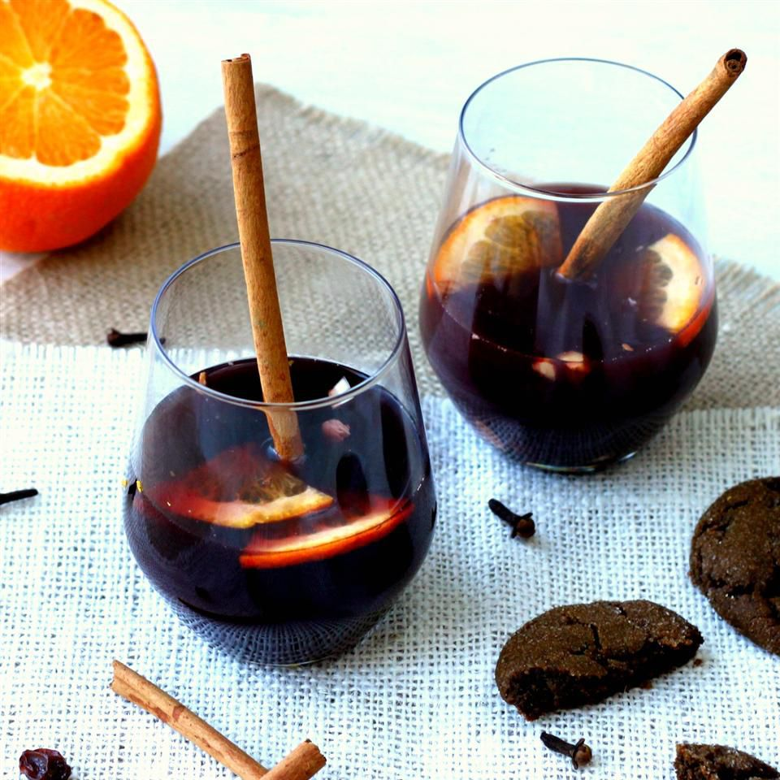

Swedish Mulled Wine

Packing a punch, spice up your evening with this warm festive drink (Glögg).
Ingredients
- 2 cups water
- 12 cardamom seeds
- 2 cinnamon sticks
- 12 whole cloves
- ½ orange, zested
- 1 cup white sugar
- 1 cup raisins
- 1 cup blanched almonds
- 4 cups Muscatel wine, or orange Muscat
- 4 cups port wine (or Burgundy)
- 2 cups brandy
Directions
- Bring water to a boil in a pot with cardamom, cinnamon, cloves, and orange zest; stir in sugar until dissolved. Remove from heat and allow to steep 8 hours to overnight.
- Place raisins and almonds into a large saucepan. Strain sugar water into raisins, then pour in Muscatel, port, and brandy. Place over medium-high heat and cook until hot but not simmering.
- Serve warm in a mug with some fruit and almonds in each cup.